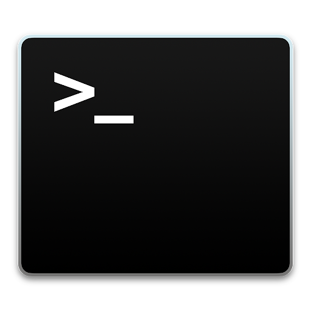

使い方サポート について
このページではLINEアカウント「使い方サポート」の使い方とアップデート情報を発信していきます。
友達登録の仕方
使い方
開発状況とアップデート情報
友達登録の仕方
連絡先をクリックし友だち追加をすることができます。
使い方
下のメニューから「質問する」を押すと質問を入力することができます。
入力するとボットによって回答が送信されます。ただいま更新中
テスト
開発状況とアップデート
